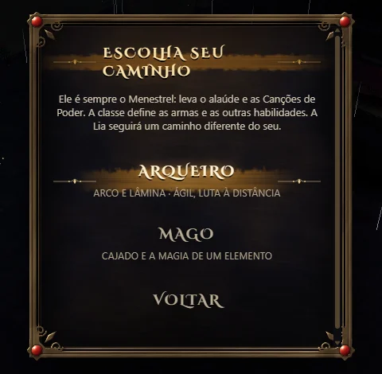
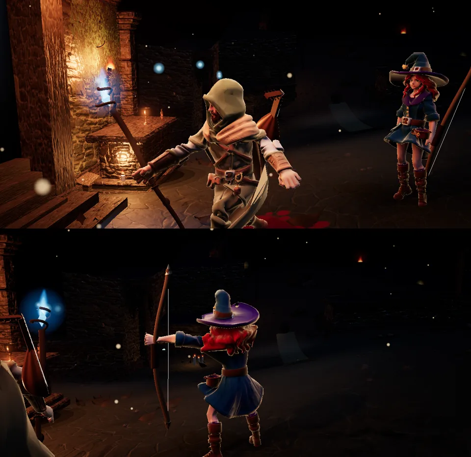
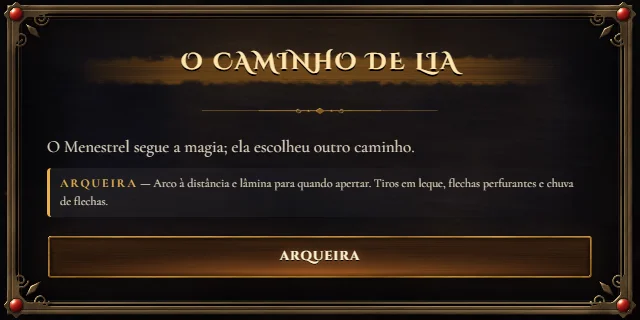

Escolha o seu caminho.
Num jogo novo, o Menestrel pode ser Arqueiro (arco e lâmina, como sempre foi) ou Mago, com cajado e a magia de um elemento: fogo, água, terra ou ar. Em qualquer classe ele continua sendo o Menestrel: leva o alaúde nas costas e tem as Canções de Poder.


A Lia segue um caminho diferente do seu. Com um Menestrel arqueiro ela é maga, e você escolhe o elemento como antes. Com um Menestrel mago ela vira arqueira, com arco, lâmina e as habilidades de arqueria, e o pai entrega a ela o arco da mãe. Os dois dividem as animações: o Menestrel lança com os gestos da Lia e a Lia atira com os movimentos dele.

Os equipamentos agora são por classe (só arqueiros, só magos), e o mercador e os chefes oferecem itens das classes do seu grupo. Jogos salvos continuam como estavam. Guerreiro e Ladino chegam nas próximas versões.
30 testes automatizados. Teste físico no aparelho pendente.